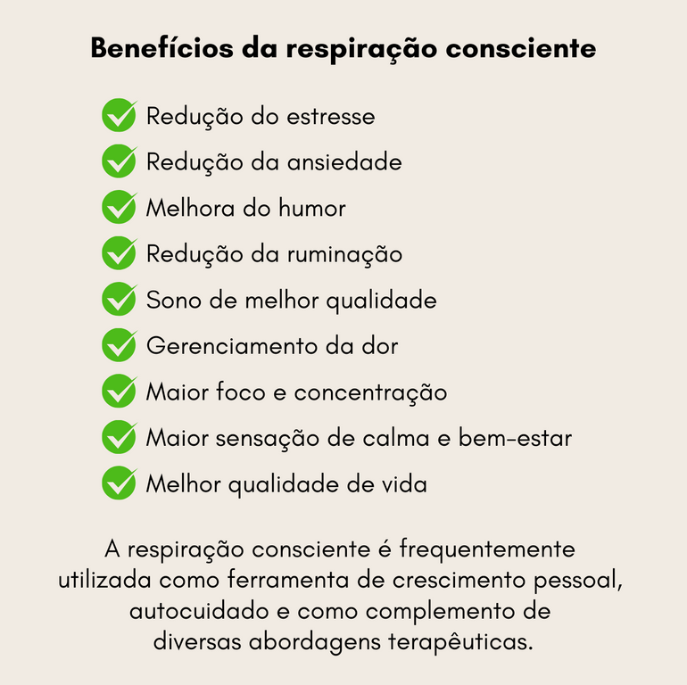

Benefícios da Prática
O que é a respiração consciente? A respiração consciente consiste em tirar o ato de respirar do automático e observar a sensação física envolvida no processo de inspirar e expirar.
- Sente-se reto em uma cadeira e certifique-se de que seu rosto e ombros estejam relaxados;
- Coloque suas mãos perto do seu estômago e respire;
- Inspire contando até quatro e expire contando até oito;
- Volte a respirar naturalmente, observando sua respiração por um minuto.
Veja matéria completa